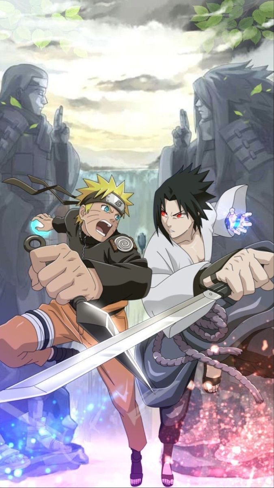
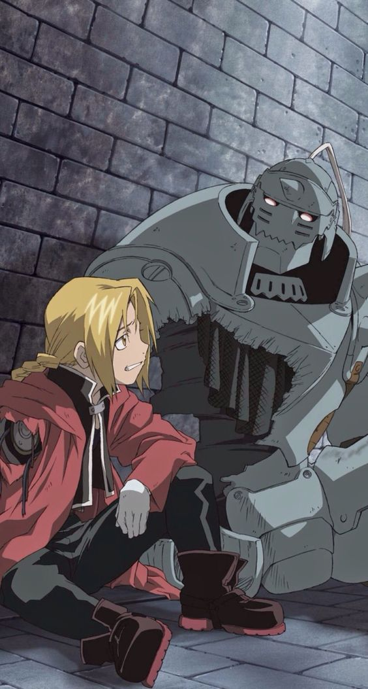
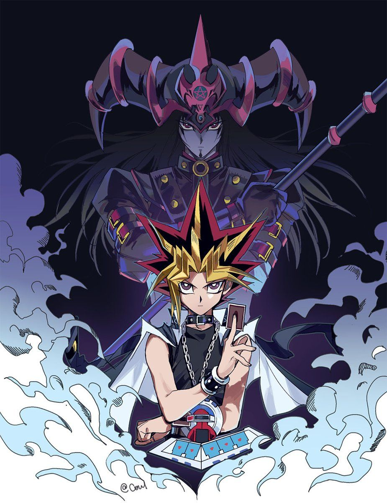
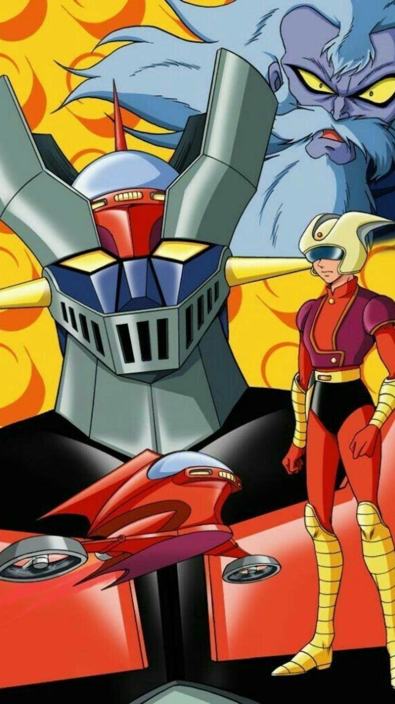
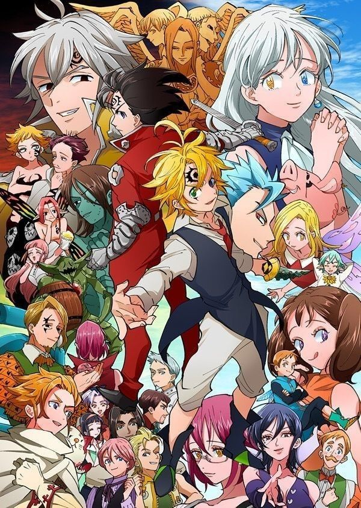

NARUTO, es una serie de manga escrita e ilustrada por Masashi Kishimoto. La obra narra la historia de un ninja huerfano adolescente, cuyos padres murieron en Ataque del Zorro Demonio de Nueve Colas, llamado Naruto Uzumaki, quien aspira a convertirse en Hokage (lider de su aldea) con el proposito de ser reconocido como alguien importante dentro de la aldea y entre sus companeros.
La serie esta basada en un one-shot que Kishimoto realizo en agosto de 1996 para la revista Akamaru Jump.A partir de noviembre de 1999, Naruto es publicado por la editorial Shueisha en la revista semanal japonesa Shonen Jump,siendo recopilado desde entonces en setenta y dos volumenes. El exito del manga hizo que su trama fuera adaptada a un anime producido por Pierrot y distribuido por Aniplex, el cual fue transmitido por la cadena televisiva TV Tokyo el 3 de octubre de 2002. La primera temporada duro 220 episodios, y poco despues se creo una secuela, Naruto: Shippuden, cuya emision empezo el 15 de febrero de 2007. Ademas, Pierrot ha producido nueve peliculas basadas en la serie, tanto de la primera como la segunda temporada, asi como varias animaciones originales. Otras piezas de merchandising incluyen un conjunto de novelas ligeras, artbooks, videojuegos y cromos de colección desarrollados por distintas empresas. El 6 de octubre de 2014, a falta de tan solo cinco publicaciones, se anunció el final para el manga, que concluyo el 10 de noviembre de 2014

Dragon Ball #2
Publicado 05-06-1995
Dragon Ball es un manga escrito e ilustrado por Akira Toriyama. Fue publicado originalmente en la revista Shonen Jump, de la editorial japonesa Shueisha, entre 1984 y 1995. Su trama describe las aventuras de Goku, un guerrero saiyajin, cuyo fin es proteger a la Tierra de otros seres que quieren conquistarla y exterminar a la humanidad. Conforme transcurre la trama, conoce a otros personajes que le ayudan en este proposito. El nombre de la serie proviene de unas esferas magicas que al ser reunidas invocan a un dragon que concede deseos. En varias ocasiones resultan utiles tanto para Goku y sus amigos como para la humanidad, aunque tambien son procuradas de forma constante por algunos seres malignos.
Caballeros del Zodiaco #3
Publicado 03-12-1985
Saint Seiya, conocida en el mundo hispanohablante como Los Caballeros del Zodiaco, es una serie de manga escrita e ilustrada por Masami Kurumada. Fue publicada desde el 3 de diciembre de 1985 en la revista Shukan Shonen Jump de la editorial Shueisha hasta el 12 de diciembre de 1990 en la revista V Jump. Fue adaptado posteriormente en una serie de animacion (anime) de 114 episodios, una OVA de 31 episodios y una ONA de 13 episodios, en total 158. Tambien se han producido cinco peliculas animadas y una pelicula de animacion CG, ademas de varias precuelas y secuelas oficiales de la historia original.
Se publicaron 108 capítulos del manga junto con una edición especial, haciendo un total de 109 en formato tankoubon, dividido en 28 volumenes con tres sagas (arcos argumentales) principales: Santuario, Poseidon y Hades. Ha sido reimpreso y reeditado en formato Wideban, Bunkoban y Kanzenban y tambien el llamado "Remix", la producción en tres ediciones (2002, 2007 y 2012).
Fullmetal Alchemist #4
Publicado 12-07-2001
Fullmetal Alchemist, tambien conocida como Full Metal Alchemist, FMA o Hagaren, abreviatura en japones es una serie de manga escrita e ilustrada por Hiromu Arakawa. Su primera adaptacion al anime fue dirigida por Seiji Mizushima y la segunda por Yasuhiro Irie. El mundo de Fullmetal Alchemist tiene un estilo steampunk, similar al de despues de la Revolución Industrial europea. En ese universo ficticio en el que la alquimia es una de las tecnicas cientificas mas avanzadas conocidas por el hombre, la historia se centra en los hermanos Edward y Alphonse Elric, quienes quieren restaurar sus cuerpos por medio de la piedra filosofal tras un fallido intento de resucitar a su madre a traves de la alquimia.

Pokemon #5
Publicado 01-04-1997
Pokemon, es un anime metaserial creado por Satoshi Tajiri, Junichi Masuda y Ken Sugimori, que narra la historia de Ash Ketchum, un joven entrenador Pokemon de Pueblo Paleta que comienza un viaje para alcanzar su sueno, ser un Maestro Pokemon. La serie esta basada en la saga de videojuegos de Pokemon tambien creada por Satoshi Tajiri, desarrollada por Game Freak y distribuida por Nintendo, que aparecieron por primera vez en el mercado japones el 27 de febrero de 1996.
El exito de los videojuegos que aun se mantiene hasta estos dias, hizo que su trama fuera adaptada en un anime producido por los estudios de animación OLM, Inc., el cual es emitido por la cadena de television TV Tokyo desde que se estrenó el 1 de abril de 1997. La primera temporada está compuesta por 276 episodios. OLM, Inc. ha producido hasta el momento 20 peliculas, junto a varias miniseries especiales (también llamadas OVA) como Pokemon Origins, Pokemon: Mega Evolution Special y Pokemon Generaciones; tambien un spin-off llamado Shu-kan Pokemon Ho-asi-kyoku que al ser llevado a Estados Unidos, obtuvo el nombre de Cronicas Pokemon (Pokémon Chronicles), una serie de historias en las que estan involucrados personajes secundarios de la serie. Otras piezas de merchandising incluyen a un conjunto de mangas y novelas ligeras basadas en el anime y sus peliculas, videojuegos, tazos y cromos de coleccion desarrollados por distintas empresas.
Yu Gi Oh #6
Publicado 30-10-1996
Yu-Gi-Oh! es un manga creado por Kazuki Takahashi, que ha dado lugar a una franquicia, ademas de multiples series de anime, peliculas, juegos de cartas y numerosos videojuegos. La publicacion comenzo el 30 de octubre de 1996 y finalizo el 8 de marzo de 2004 con treinta y ocho volumenes. Se trata de uno de los mangas mas populares ofrecidos en la revista Weekly Shonen Jump de Shueisha. La version espanola del anime mantiene el nombre japones, pero el anime traducido al espanol peninsular e hispanoamericano usa el nombre estadounidense. La primera adaptacion a serie de anime fue por parte de Toei Animation en 1998, la cual siguio fielmente los primeros siete capitulos del manga. Tan solo se realizaron 27 capitulos que nunca salieron de Japon, ya que no tuvo buena recepcion.
En 2000, una segunda adaptacion a anime titulada Yu-Gi-Oh! Duel Monsters fue producida por Studio Gallop y distribuida por la cadena de televisión TV Tokyo; esta segunda adaptacion consiguio mas recepcion y popularidad a diferencia de la anterior, llegando a ser traducida a mas de veinte idiomas y vendido en mas de sesenta paises, version que fue editada en occidente por 4Kids. Finalizo el 29 de septiembre de 2004 con doscientos veinticuatro episodios. Una version remasterizada destacando ciertos Duelos comenzo a emitirse en Japon en febrero de 2015.

Mazinger Z #7
Publicado 02-10-1972
Mazinger Z es una serie de manga y anime creada por el dibujante y guionista japones Go Nagai. En la ficcion, Mazinger Z fue el primer robot gigante tripulado por un protagonista, marcando las bases del genero mecha, que tomaria fuerza tras el exito de esta franquicia.
La historia de la serie trata sobre un grupo de cientificos que disponen de un robot gigante en su lucha contra las fuerzas malignas del Dr. Hell (tambien conocido como Dr. Infierno en algunos paises de habla hispana). El manga fue publicado por primera vez el 2 de octubre de 1972 en el semanario Shonen Jump.En 2009, la serie se reedito en un nuevo manga titulado Shin Mazinger Shogeki! Z hen, que incluyo novedades en la historia.El anime de Mazinger Z, por su parte, se estrenó en el canal Fuji TV el 3 de diciembre de 1972.
En enero de 2001, la revista Animage publico una lista sobre los animes mas populares de todos los tiempos, en la que Mazinger Z se coloco en el numero 11.

Nanatsu no Taizai #8
Publicado 10-10-2012
Nanatsu no Taizai, comunmente conocido como Los siete pecados capitales en Hispanoamerica y Espana, es un serie de manga y anime escrita e ilustrada por Nakaba Suzuki, serializada en la revista Weekly Shonen Magazine de Kodansha desde el 10 de octubre del 2012. La trama principal se situa en una epoca medieval y sigue las aventuras del escuadron de caballeros conocidos como los siete pecados capitales que actuan como los protectores de Britannia, de la opresion, y al mismo tiempo buscan la redencion por pecados que les confirieron sus titulos.

Detective Conan #9
Publicado 05-06-1995
Detective Conan , tambien conocida como Case Closed, es una serie de manga atemporal y ocasionalmente anacronica escrita e ilustrada por Gosho Aoyama. La historia se centra en Shinichi Kudo, un famoso detective que es envenenado por unos hombres vestidos de negro, pero en vez de morir encoge hasta tomar el aspecto de un nino de siete anos. Tras esto, Shinichi, decide cambiarse el nombre por Conan Edogawa para proteger a los suyos, obtener suficientes pruebas para detener a la organizacion y encontrar una cura para volver a su tamano normal.